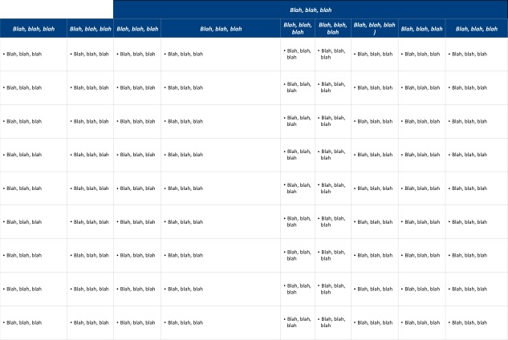

Thousands of little-known companies have better, cheaper or just plain cooler products than the mass-market choices we usually have.
We help you find them quickly, so you can buy products that fit YOUR individual needs and style (gifts too).
Our large, growing and unbiased list of sources with profiles, user reviews and comments, helps quickly find products that you can't find elsewhere without hours of work. We focus on companies selling products that are special in some way, such as:
- Artisan, Small-Batch or Limited Production
- Custom Products
- Environmentally, socially or financially responsible
- Gifts that are Special, Uncommon or Unique
- Hard-to-find or discontinued items
- Innovative Aesthetic and Functional Designs, materials or ingredients
- International Finds
- Rare, Scarce, One-of-a-Kind
- Special Function/ Purpose Products
- Uncommon, even unique materials, ingredients, colors, etc.
Shopping for products that stand apart like these can be a frustrating process with lots of wasted time.
We looked for a better way, but there really wasn't one, so we invented it.
It's just getting started and we highly value (and ask for!) your inputs and ideas for how to make it better, but here's how it works:
- We continually find new and little-known niche companies from all over the world that make or sell products that are truly special in some way.
- Perhaps they make custom or personalized items. Maybe they have unique aesthetic and/ or functional designs that provide more enjoyment or value than products from the well-known brands and retailers that are our usual choices. They may even use...
- Using proprietary algorithms, we analyze each company, select the special ones and create a brief profile of each company.
- When you search for something of interest, we find companies that sell the types of products you're looking for.

Our About page explains the philosophy behind what we do.